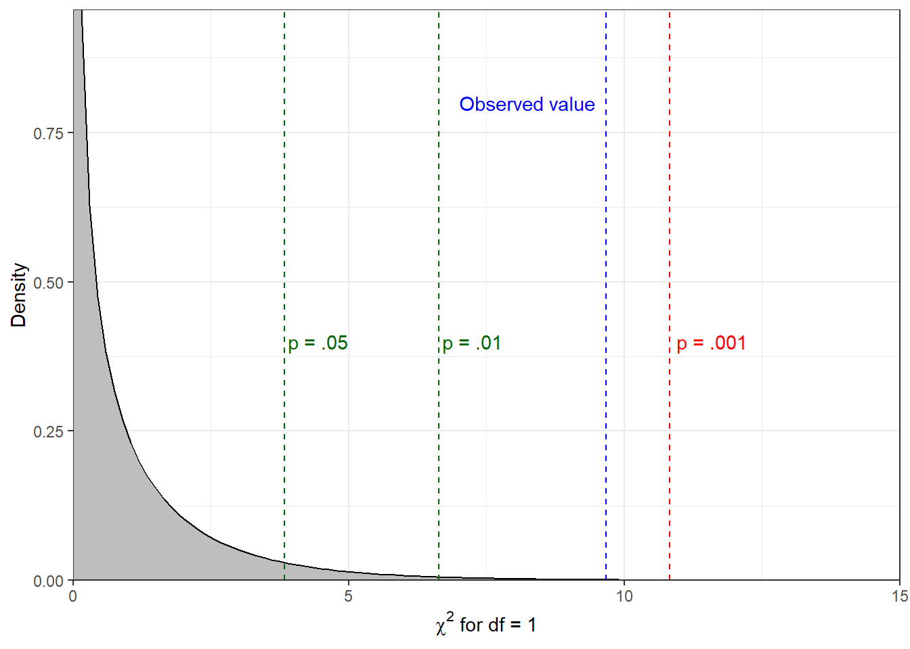

Sex |
|||
|---|---|---|---|
| Signed? | Male | Female | Total |
| Yes | 7 | 20 | 27 |
| No | 40 | 25 | 65 |
| Total | 47 | 45 | 92 |
6 The \(\chi^2\) test of independence and the independent-samples t-test
6.0.1 Conceptual
- Calculate the \(\chi^2\) statistic by hand and determine its significance
6.0.2 SPSS
- Run and interpret the \(\chi^2\) test of independence and the independent-samples t-test
6.1 \(\chi^2\) test of independence by hand
This test is appropriate when we wish to examine the relationship between two variables which are measured either at the nominal or ordinal. For example, we might have a research question such as: Is there a relationship between sex and having signed a petition in the last 12 months among the UvA student population? If we operationalize ‘sex’ as ‘female/male’ and ‘petition signed in the last 12 months’ as ‘yes/no’, then we have two nominal (binary) variables. As we will one more use crosstabulations to visualize the relationship between these two variables, we will nominate ‘sex’ as our independent variable, as, were there any causal relationship between these variables, it would surely originate with ‘sex’ and not the other way around.
Having defined our variables, we can specify hypotheses for our test:
- \(H_0\) = In the population of UvA students, there is no relationship between sex and having signed a petition in the last 12 months
- \(H_1\) = In the population of UvA Students, there IS a relationship between sex and having signed a petition in the last 12 months
Now, let’s make a crosstabulation of the data:
As we do not have equal numbers of female and male participants, we can compute column percentages as previously:
Sex |
|||
|---|---|---|---|
| Signed? | Male | Female | Total |
| Yes | 14.89 | 44.44 | 29.35 |
| No | 85.11 | 55.56 | 70.65 |
| Total | 100.00 | 100.00 | 100.00 |
With this descriptive tabulation, we can see that female students appear to have signed petitions more often in the last 12 months than male students. So, we have a suggestion that the two variables are related, but, in order to make inferences about the population, we need to compute the \(\chi^2\) statistic from the counts. Put simply, this statistic tells us how much the observed frequencies in each cell deviate from the pattern expected under the null hypothesis (i.e., that there is no relationship between the variables.) If you look at the distribution of counts for ‘Yes’ and ‘No’ in the ‘Total’ column, you can see the expected pattern if the data were to be collapsed across ‘Sex’. These totals allow us to calculate the expected frequencies of petition signing for both females and males, which we can compare to the observed frequencies as part of our calculation of the \(\chi^2\) test statistic:
\[ \chi^2 = \sum \frac{(f_o - f_e)^2}{f_e} \tag{6.1}\]
Where:
- \(f_o\) = observed frequencies
- \(f_e\) = expected frequencies
- Frequencies we expect to find in each cell if IV and DV are unrelated (i.e., under \(H_0\))
Sex |
|||
|---|---|---|---|
| Signed? | Male | Female | Total |
| Yes | 7 | 20 | 27 (29.35%) |
| No | 40 | 25 | 65 (70.65%) |
| Total | 47 | 45 | 92 (100%) |
Given our totals, we can calculate the expected frequencies as follows:
- female/yes: \(f_e = \frac{29.35}{100} \times 45 = 13.21\)
- female/no: \(f_e = \frac{70.65}{100} \times 45 = 31.79\)
- male/yes: \(f_e = \frac{29.35}{100} \times 47 = 13.79\)
- male/no: \(f_e = \frac{70.65}{100} \times 47 = 33.21\)
Recalling the equation, we can calculate the statistic step-by-step:
| \(f_o\) | \(f_e\) | \((f_o - f_e)^2\) | \((f_o - f_e)^2/f_e\) |
|---|---|---|---|
| 7 | 13.79 | 46.1 | 3.34 |
| 20 | 13.21 | 46.1 | 3.49 |
| 40 | 33.21 | 46.1 | 1.39 |
| 25 | 31.79 | 46.1 | 1.45 |
Summing the squared differences between the observed and expected frequencies in the rightmost column gives us a \(\chi^2\) score of 9.67. In order to determine the significance of the statistic, we need to consult the statistical table A4 on page xx of the Argyrous book. The degrees of freedom value for the test is calculated by subtracting 1 from the number of rows and columns, and multiplying the result. As we have two rows and two columns, this test has 1 degree of freedom, and we can therefore find the relevant critical \(\chi^2\) statistics in the first row of the table. We begin by comparing our value to the critical value associated with the .05 level, which our observed value exceeds. We repeat this process with the thresholds in the table until we find a critical value greater than our observed value, in this case the value associated with the .001 significance level. The significance level we report, then, is the value to the left of this (i.e., the lowest significance value whose critical value is exceeded by our observed value). The figure below shows a \(\chi^2\) distribution with 1 degree of freedom, with notations at the critical values for the significance levels referenced in the textbook, and at the observed statistic.

6.1.1 Reporting results
- A Chi-Square test of independence showed a significant relationship between gender and having signed a petition in the last month, \(\chi^2\)(1, N=92) = 9.67, p< 0.01.
- (We reject \(H_0\) with p < 0.01).
- (We reject \(H_0\) with p < 0.01).
- Plainly: in the population, there appears to be a relationship between gender and whether or not people have signed a petition in last 12 months: women are more likely to have signed a petition.
6.2 SPSS explainer video
[ESS chi, indsamples t]